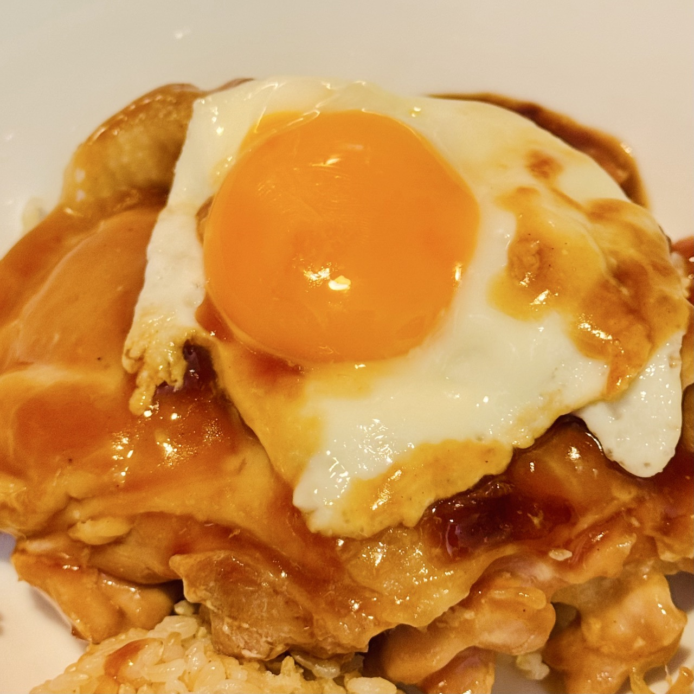

Home
Teriyaki Chicken

Description
No! Teriyaki chicken is not Chinese food! "Teri" is the Japanese word for glazed and "yaki" means grill. It's
been my favorite healthy protein to cook while living in Japan. It's so easy too!
Ingredients
- 1 Chicken thigh (skin on)
- 1 tbsp potato starch or corn starch
- ½ tbsp oil
- Salt (just a sprinkle✨)
- 2 tbsp soy sauce
- 2 tbsp mirin
- 2 tbsp sake
- 2 tbsp water
- 1 tsp dashi
- 1 tsp honey
Steps
- Defrost the chicken
- 🥔🥣 Put 1 tbsp of potato starch or corn starch in a bowl
- 🥣 Add the soy sauce, mirin, sake, water, dashi, and honey to make the sauce
- 🧻 Dab the chicken with a paper towel to dry off the water
- 🔪 Make diagonal cuts on the meat side to even out the thick parts
- 🍳 Put ½ tbsp of oil in the pan
- 🧂 Sprinkle salt on the oil in the pan and on the meat side of the chicken
- Place the chicken skin side down on the oil
- ꩜🥢 Move the chicken around the pan in a circular motion to spread the oil evenly
- 🔥 Turn the heat on to medium
- Set a timer for 7 minutes
- Move the chicken around the pan as it cooks
- After 7 minutes, flip the chicken thigh over
-
🔥 Start a 2-minute timer
- 🧻 Wipe the oil off the pan with chopsticks and a paper towel
- 🥢 Poke holes in the chicken with chopsticks so the sauce soaks in
- 🥔🥣 After 2 minutes, pour the sauce and potato starch mixture over the chicken
- 🥄 Scoop the sauce over the chicken while it cooks
- 🔥 Cook until the sauce thickens
- 🔪 Cut into the chicken to make sure it's cooked through
- ✄ Use scissors to cut the chicken into slices
Enjoy!